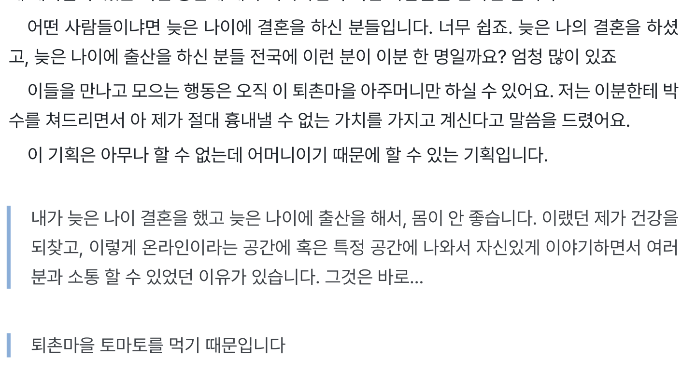
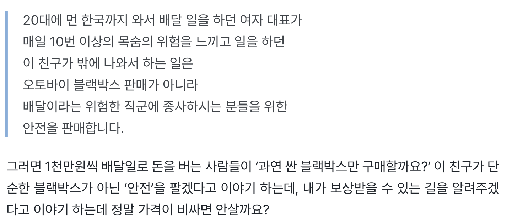
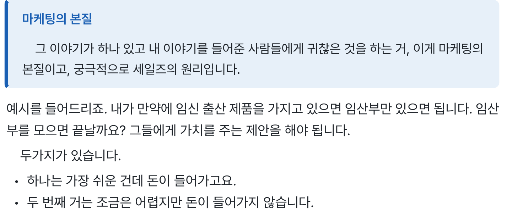

FREE EBOOK · ZERO TO ONE
홍보는 하는데
무슨 이야기를 할지 막막하다면
무슨 이야기를 할지 막막하다면
첫 고객을 만드는
실전 마케팅
누구를 모으고 무엇을 제안할지.
작은 사업자가 시작하는 마케팅 이야기.
마케팅 비법서 제로백
AIMAX · 메이크패밀리 운영사
직접 팔아온 경험을
실전의 기준으로
메이크프렌즈 누적 매출
114.9억원
2021.01 — 2024.04
(주)메이크프렌즈 전체 매출 · 월별 원장 40개월 합산
각 막대는 2021년 1월부터 해당 시점까지의 누적액
무료 PDF 전자책
읽고 나서
세 문장을 적어 보세요
1
내가 이야기할 주제
2
그 이야기가 필요한 사람
3
그 사람에게 건넬 첫 제안
책 속 사례를 내 상황에 대입하며
사업의 출발점을 정리합니다.
상위노출부터 알아봐야 할까요?
🌱나에게 모일 사람을
먼저 떠올려 보세요
그 사람에게 필요한 이야기가 무엇인지,
어떤 불편을 덜어줄 수 있는지부터요.
책 속 사례
내가 사는 곳도
이야기의 시작이 됩니다

거창한 이력만이 주제가 되는 건 아니에요.
살고 있는 곳, 해 본 일, 자주 받는 질문에서
다른 사람이 궁금해할 것을 찾아봅니다.
내 주제 찾기
- 내가 자주 하는 일
- 누군가에게 설명해 줄 수 있는 일이 있나요?
- 사람들이 묻는 질문
- 반복해서 답하는 질문은 무엇인가요?
- 도움이 필요한 사람
- 내 경험이 누구에게 쓸모 있을까요?
같은 물건, 다른 제안
물건 이름만으로는
설명이 끝나지 않아요

내가 파는 물건은 무엇인가
이 사람에게
왜 필요한가
왜 필요한가
고객이 원하는 가치를 생각하면
상품을 소개하는 문장도 달라집니다.
첫 제안 만들기
🤝상대가 귀찮아하는 일
하나부터 덜어주세요

💬주제 정하기내가 계속 말할 것
🙋사람 떠올리기그 말이 필요한 사람
🧩불편 덜기먼저 도울 수 있는 일
🎁내 것 제안하기다음 선택을 건네기
AIMAX · 메이크패밀리
윤동규
이 책 지은이
메이크패밀리 대표
메이크패밀리 대표
사업도, 배움의 공간도
직접 운영하고 있습니다
메이크패밀리 네이버 카페
12,127명

2026.09.10 카페정보 화면 기준
출처: 네이버 카페 westudyssat
출처: 네이버 카페 westudyssat
메이크패밀리 라운지
2,885명

2026.09.10 라운지 공개 화면에 표시된 인원
출처: 메이크패밀리 라운지 첫 화면
출처: 메이크패밀리 라운지 첫 화면
무료로 읽기 전에
무엇을 받나요?
「0에서 1을 만드는 마케팅 비법서 제로백」 PDF 전자책을 무료로 받습니다.
상위노출 방법도 나오나요?
검색 로직이나 상위노출 공략법을 다루는 책은 아닙니다. 주제, 고객, 가치 제안을 사례와 함께 생각하는 책입니다.
어떻게 받나요?
0원 주문 후 주문 이메일로 PDF를 받습니다. 같은 이메일로 라운지에 로그인하면 다시 다운로드할 수 있습니다.
지금 내 일에 적용해 보세요
내 주제 한 문장,
여기서 시작하세요
무료
주문 이메일로 PDF를 받고
같은 이메일로 라운지에서 다시 꺼내보세요.
윤동규 지음. PDF 전자책입니다. 본문 사례는 마케팅 관점을 설명하기 위한 내용이며 매출, 수익, 성공을 보장하지 않습니다. 주제와 제안 메모는 독자가 직접 작성하는 활용 결과물입니다.